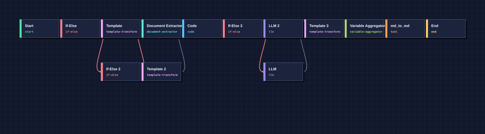

From generated Dify DSL
to a stable, runnable workflow
A sanitized, end-to-end replay of one frozen workflow across three fixed functional inputs. The graph comes from the committed YAML; run status, steps, and latency come from captured Dify node traces.
Requirement contract
The generator is not asked to write arbitrary platform JSON in one shot. Inputs, outputs, and branch obligations are fixed before binding.
INPUT
source_code: filesource_language: text
A source file plus the declared language.
OUTPUT
explanationmarkdown
Both keys must be present and non-empty. Markdown becomes a typed artifact descriptor when the optional exporter is unavailable.
Frozen workflow graph
Fourteen nodes and sixteen edges, including three conditional routers. Only the selected branch executes for each input.

Graph validator + bounded repair
Controlled fault injection proves that an empty edge is detected before import. A graph-level issue rebuilds the topology skeleton instead of guessing one missing connection.
Injected failure
target: __missing_node__
EDGE_ENDPOINT_NOT_FOUND
Post-repair validation
endpoint issues: 0
status: PASS
Repair scope: Graph → rebuild or reload the skeleton · Binding → rebind the failed node · Execution → use the failing node trace, then rerun the entire workflow.
Dify adapter + runtime execution
Platform fields are added after the graph is stable. The adapter preserves task semantics while normalizing runtime-specific details.
Adapter actions
- model binding normalized
- language-agnostic analysis gate
- plugin fallback → typed artifact
- End output type alias verified
Import and publish
HTTP 200 → PUBLISHEDEach functional input ran through the Dify Workflow API. Temporary application API keys were deleted after each run.
model: doubao-seed-evolvingthinking: disabled
Three-input execution evidence
Stability means the same frozen workflow passes every fixed input—not that repeated sampling eventually gets lucky.
| Input | Execution + contract | Steps | Elapsed | Output keys | Run ref |
|---|---|---|---|---|---|
| test1 | PASS | 11 | 9.948s | explanation, markdown | 000fc272 |
| test2 | PASS | 11 | 11.340s | explanation, markdown | 84463996 |
| test3 | PASS | 11 | 8.828s | explanation, markdown | 8851e593 |
test1 · node trace timing
All three executions reached End and returned the required explanation and markdown outputs. No repair retry was needed in this captured run.
Raw prompts, source files, model responses, admin cookies, and API tokens are deliberately excluded.